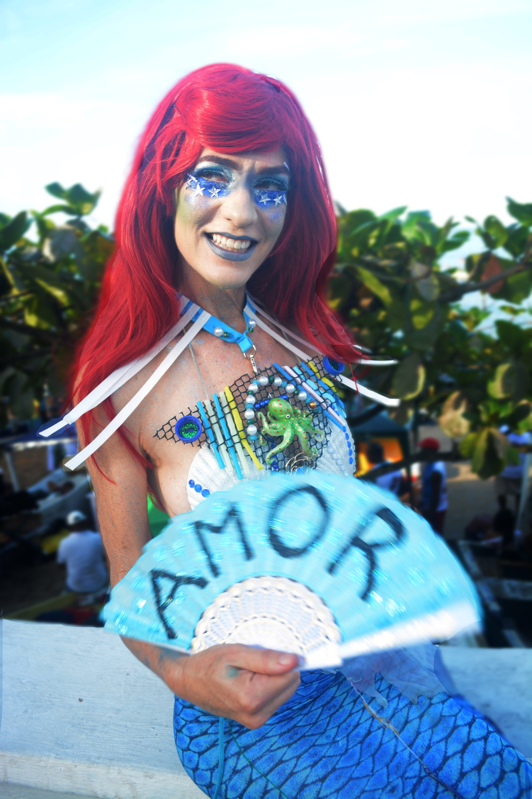
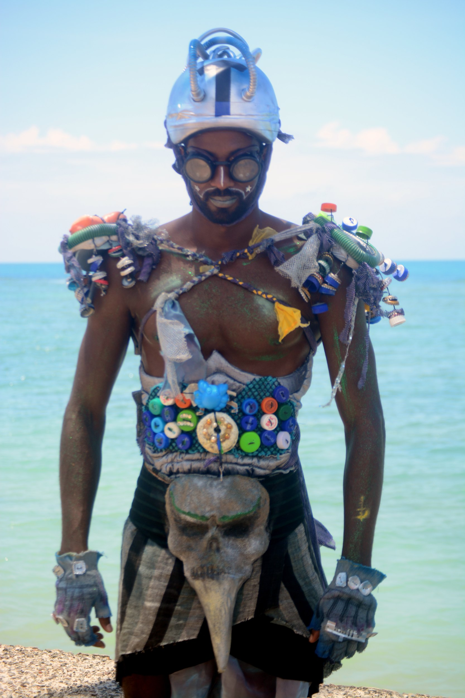
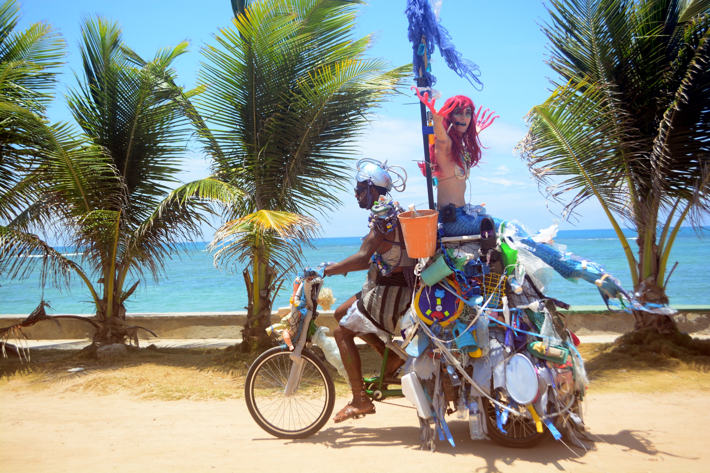
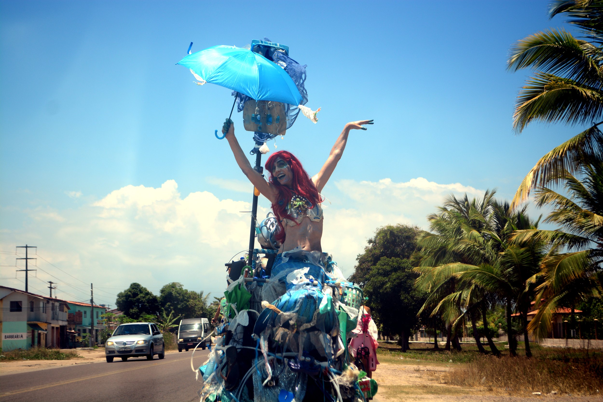
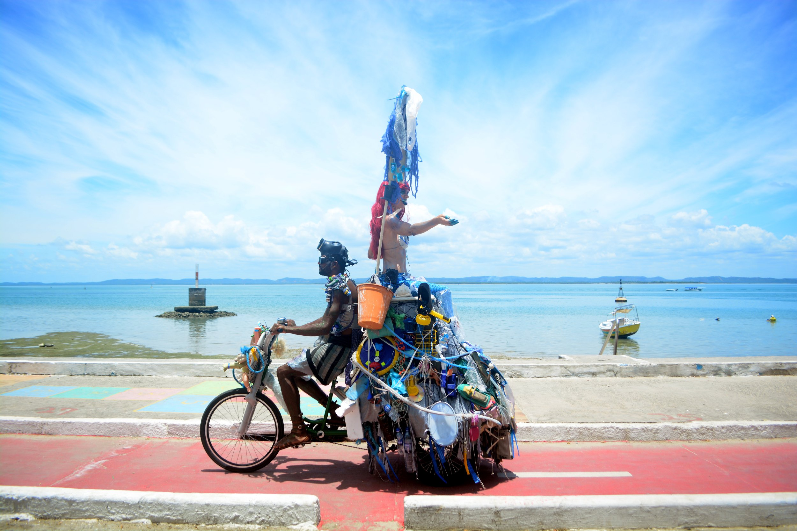

Performance · Photography
Siren Jones
Siren Jones is the environmental character of performer Elizabeth Doud, who works with the company Siren Arts. In 2018, Inés Grimaux photographed Doud's street performance A Fábrica de Lágrimas de Sereia (The Mermaid Tear Factory) in Bahia, Brazil.
The photographs on this page are by Grimaux. The summaries below are based on the two publications linked under Sources.
The performance, 2018
According to the Bahia newspaper Bahia Já, the piece put a mermaid on the streets during the Festa de Iemanjá in Salvador and on Itaparica Island. The character offered her tears as miraculous cures for contemporary ailments, a metaphor for healing the oceans, to draw attention to plastic waste and ocean warming.
The programme listed performances at Rio Vermelho on 2 February, at the Barra Lighthouse on 3 February and on Itaparica Island from 17 to 24 February 2018. The work was created as part of Doud's doctoral research in the Performing Arts graduate programme at the Federal University of Bahia (UFBA) and was supported by the Bahia State Department of Culture's 2016 theatre grants (Edital 22/2016).
In the press
Bahia Já, 1 February 2018. A preview of the performance at the Festa de Iemanjá, with the photograph credited to Ines Grimaux.
American Theatre, 18 February 2020. In “Digging for New Roots” (March 2020 issue), Chantal Bilodeau reports on theatre and climate change. The article presents Doud and Siren Arts, credits Grimaux's photograph of the 2018 performance, in which Doud appears with performer Afonso Santana, and announces Doud's next project, Mermaid Truth or Consequences: an interactive game show hosted by two mermaids, planned for locations in Miami-Dade County, Florida, in English, Spanish and Haitian Creole.
Photographs
.jpg)




.JPG)

.JPG)

